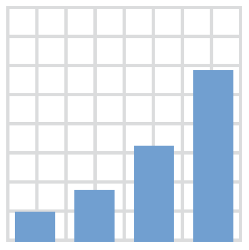
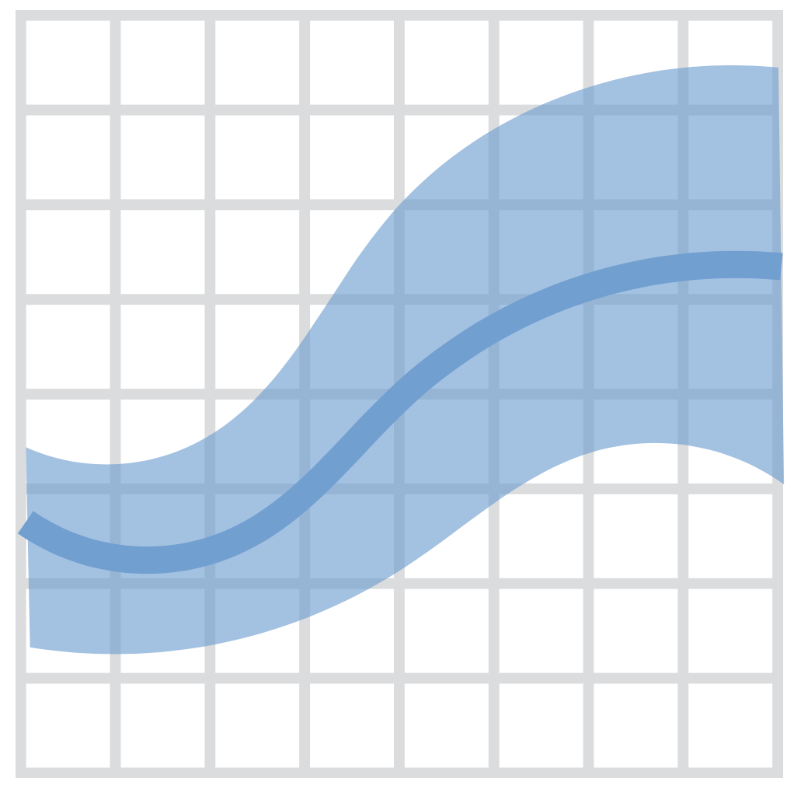
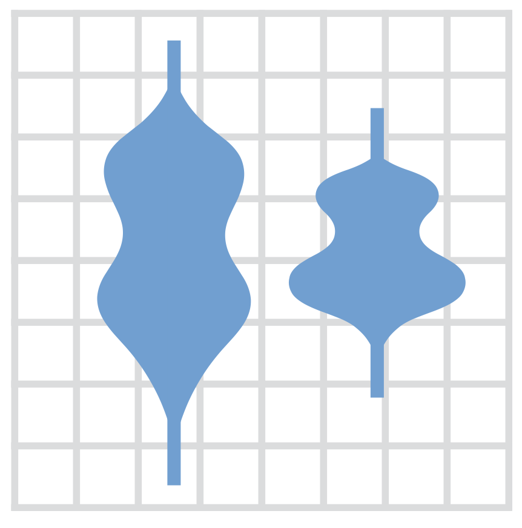
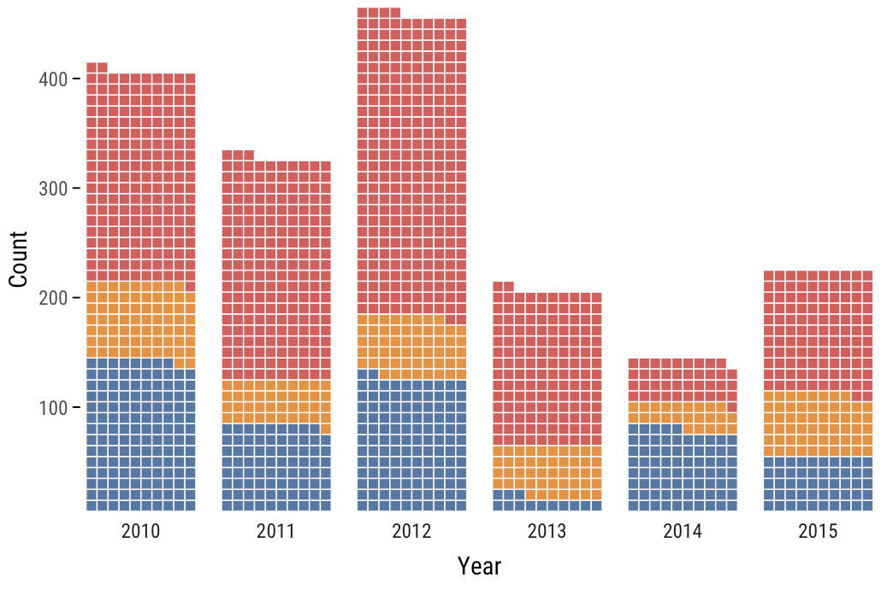

Economic Policy Visualization
Income · Geometries
October 28, 2024
Functional income distribution
Personal income distribution
Historical development of global personal inequality: 3 views


Global inequality 1820-2020

Decomposition of global inequality

Show me your geometries!
Selected geometries in {ggplot}
| Geometry | Explanation | |
|---|---|---|
| area, ribbon | An area plot is the continuous analogue of a stacked bar chart. | |
|  | bar, col | Bar charts may be proportional (bar) or with absolute values (col). |
| boxplot | The boxplot compactly displays the distribution of a continuous variable. | |
| density, histogram | Kernel density plot, which is a smoothed version of the histogram. | |
| hline, vline, abline | Draws a horizontal or vertical line with an intercept or a line with a slope. | |
| line, path | Line between observations in order of variable (line) or appearance (path) | |
| linerange, errorbar | Various ways of representing a vertical interval defined by x, ymin and ymax. | |
| point, jitter | The point geom is used to create scatterplots and jitter avoids overplotting. | |
| segment, curve | Draws a straight or curved line between points (x,y) and (xend, yend). | |
|  | smooth | Smoothed line with standard error bounds across a scatterplot. |
|  | violin | A violin plot is a compact display of a continuous distribution. |
Additional geometries
ggstream::geom_stream() 
waffle::geom_waffle() 
ggchicklet::geom_chicklet() 
ggridges::geom_density_ridges() 
ggsankey::geom_sankey() 
ggbump::geom_bump()